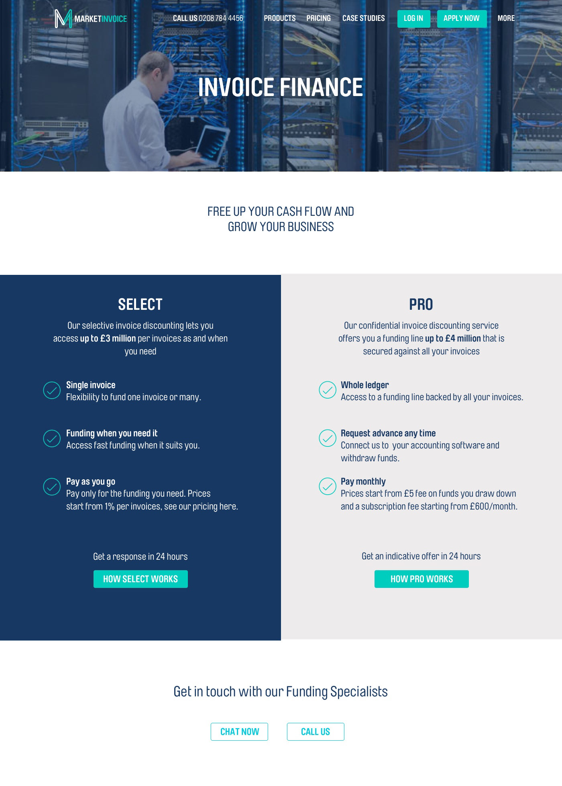
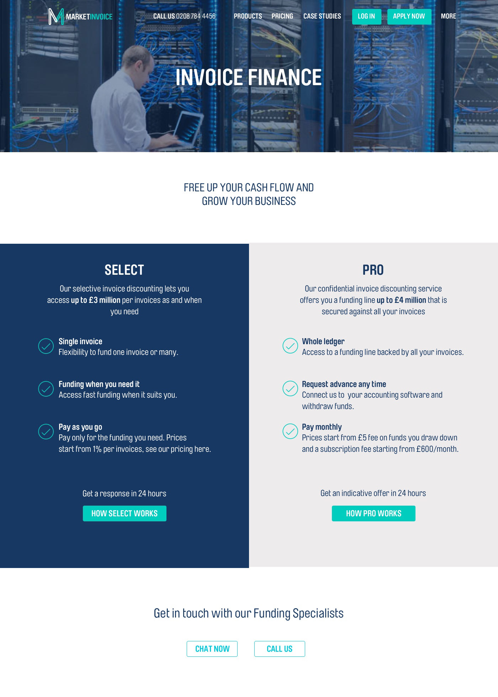

MarketInvoice is an alternative finance, or financial technology (FinTech) company that helps SMEs ease their cashflow problems.
Whilst I worked there as a Website Manager and Designer there was a lot to do day-to-day in terms of maintenance, campaign support (SEO, PPC, sales etc.), and to keep the site up to date with the changing business. However, the biggest project I had was to re-design the website when the company rebranded.
Skills used
- User Research
- Information Architecture
- Wireframing
- Copywriting
- Web design
- UI/UX Design
- HTML/CSS/jQuery
Tools used
- Sketch
- Photoshop
- InVision
- Bootstrap (replaced with flexbox)
- Accessibility Guidelines
Homepage
Comparing the old and new homepage I designed shows the old brand and website was dull and "floaty", whereas the new design is much more considered, purposeful and bolder.

Solutions page
To illustrate the design process I went through during this rebrand, the following shows my design journey on the redesign of the Solutions page.
Originally the idea was to simply re-skin the old Product page in the new branding, as seen below in pen and paper and Sketch wireframes.

 

I then did some Sketch wireframes to take back to the stakeholder. However, at the same time the company was rebranding, it was also developing new products to release further down the line. It became clear this comparative approach wasn't going to be able to meet the developing requirements of a multi-product business. This was my first attempt at showing multiple products.
The problem with this is that if you want to add or remove products, depending on the business' need, it will significantly alter the page and throw off its balance, especially if there are an odd number of blocks. I then took a different approach with a menu based system, the advantage being that items could be added to the menu without changing the page structure.

This idea, however, didn't allow for easy comparison between products, something that we knew was an issue for users from testing and research. This was especially true as the products the company provided were not easily understood or, truth be told, particularly exciting. Invoice financing isn't sexy. So the aim was to give users an overview of what each product is, what it's good for and its terms in a more easily digestible way than the multi-product blocks.
Website Guidelines
After designing the website, I felt it was important that the stylistic integrity remained cohesive and consistent no matter who contributed to the website in the future and so I wrote these website guidelines as part of the wider brand guidelines.
Standarisation, standardisation, standardisation.
Laying out the brand colours, any variations, and use cases for the website.
A key brand value of MarketInvoice was Ease of Use and so I wanted this reflected as much as possible in the website. I developed the rules for the layout, block spacing and text to keep things simple but also to help the website stand out.
For menus, drop-downs and buttons on the website I wanted it to be above all flexible so that, for example, list items on a drop-down can be removed without affecting functionality or look.
Standardising menus was also very important so that functionality was the same on two different areas of the site, even though the design might be different, e.g. careers and FAQs.
I standardised overlays as I know from experience that if rules aren't in place, people will use whatever overlay looks good for the specific image or page which can result in a website feeling stylistically confused overall.